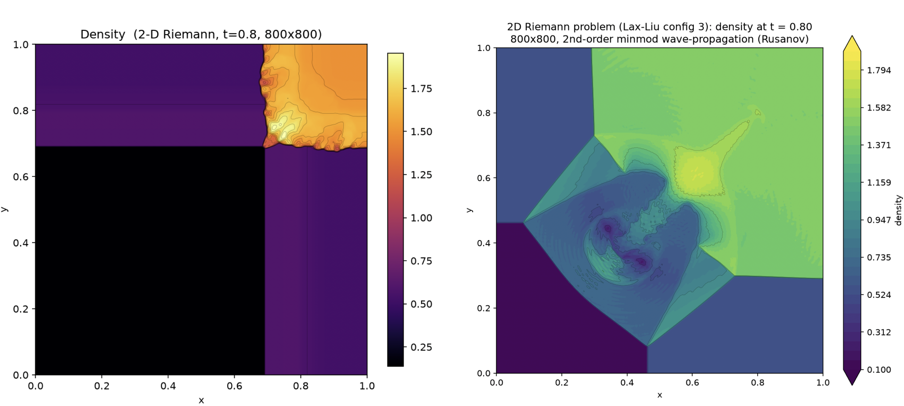

Research note · Benchmarking
Benchmarking Lanyon against Frontier Models: Nonlinear PDEs
In this technical deep dive, we extend previous benchmarking by comparing the current frontier models against Lanyon in terms of accuracy and cost for the solutions to *nonlinear* partial differential equations.
Having seen how the current frontier models perform for creating solvers for linear hyperbolic PDEs, we turn now to the question of how these frontier models compare to Lanyon for nonlinear hyperbolic PDEs. Lanyon’s capabilities are increasingly clear in comparison to the new challenges the frontier models must solve: shocks, rarefaction waves, and even more complex nonlinear structures which must be correctly and stably solved for by their numerical schemes. As we will see, many more mistakes can creep into the implementations of discretizations of nonlinear hyperbolic PDEs compared to linear hyperbolic PDEs. The power of a neurosymbolic architecture which produces formally verified code is made manifest as our models approach the needed sophistication to simulate the physical world.
The benchmarks
As before, our benchmarking is divided into two different cases based on the capabilities of Lanyon shown in our discussion of Burgers’ equation and the corresponding GitHub repository and the Euler equations for compressible hydrodynamics and the corresponding GitHub respository. We evaluate the same five frontier models:
- Kimi K3
- Claude Opus 4.81
- Claude Fable 5
- GPT-5.5
- GPT-5.6 Sol
and again sub-divide between a detailed and terse prompt for three separate trials to evaluate the frontier models under different run conditions and characterize variation run to run. Further details on how the differing prompts are constructed and the rubric for evaluation can be found in our benchmarking for linear hyperbolic PDEs.
The two problems we evaluate are:
- Burgers’ equation sine wave shock steepening and step function rarefaction wave
- 2D Riemann problem with the Euler equations
Burgers’ equation: top-line results
| variant | config | cost/trial | wallclock | mech | hygiene | panel |
|---|---|---|---|---|---|---|
| detailed | claude-fable-5 | \$10.31 ± 1.72 | 28.8 ± 2.6 min | 3/3 | 3/3 | faithful x3 |
| detailed | claude-opus-4-8 | \$7.29 ± 1.31 | 30.3 ± 4.0 min | 3/3 | 3/3 | faithful x3 |
| detailed | gpt-5.5 | \$2.05 ± 0.29 | 7.7 ± 2.1 min | 3/3 | 3/3 | faithful x3 |
| detailed | gpt-5.6-sol | \$1.94 ± 0.46 | 10.3 ± 1.8 min | 3/3 | 3/3 | faithful x3 |
| detailed | kimi-k3 | \$3.08 ± 0.55 | 54.5 ± 2.0 min | 3/3 | 3/3 | faithful x3 |
| terse | claude-fable-5 | \$8.94 ± 1.07 | 27.3 ± 2.5 min | 3/3 | 3/3 | faithful x2, partial x1 |
| terse | claude-opus-4-8 | \$4.40 ± 0.88 | 22.1 ± 2.7 min | 3/3 | 3/3 | partial x3 |
| terse | gpt-5.5 | \$1.30 ± 0.21 | 7.0 ± 2.3 min | 2/3 | 3/3 | faithful x3 |
| terse | gpt-5.6-sol | \$1.32 ± 0.27 | 6.8 ± 1.4 min | 3/3 | 3/3 | faithful x3 |
| terse | kimi-k3 | \$3.75 ± 0.93 | 69.6 ± 18.8 min | 3/3 | 3/3 | faithful x3 |
As before, in the “mech” column, we are checking all three of: does the C code compile, does the
C code run, and does the Lean code type check, for each of the three trials. For the “hygiene”
column we are checking for zero use of sorry/admit, zero axiom declarations, and zero
use of native_decide for each of the three trials. Note again that a score of faithful in our
automated scoring here is a measure of “does the Lean match the C” and not a measure of
faithful implementation of the prompt.
For assessing cost, we likewise again focus on the token usage:
| variant | config | output tokens (mean, vendor-billed) | cumulative input (mean) | cache-hit share |
|---|---|---|---|---|
| detailed | claude-fable-5 | 140k | 2.03M | 93% |
| detailed | claude-opus-4-8 | 142k | 4.58M | 94% |
| detailed | gpt-5.5 | 28k | 1.11M | 84% |
| detailed | gpt-5.6-sol | 28k | 1.67M | 96% |
| detailed | kimi-k3 | not reported; per-trial bounds (see below) | not reported | not reported |
| terse | claude-fable-5 | 116k | 1.94M | 94% |
| terse | claude-opus-4-8 | 105k | 1.93M | 93% |
| terse | gpt-5.5 | 21k | 0.60M | 85% |
| terse | gpt-5.6-sol | 22k | 0.91M | 95% |
| terse | kimi-k3 | not reported; per-trial bounds (see below) | not reported | not reported |
Kimi per-trial bounds (floor-ceiling, trial cost in parens):
- detailed — t1: 15k-163k (\$2.44); t2: 22k-222k (\$3.32); t3: 17k-231k (\$3.47)
- terse — t1: 24k-308k (\$4.62); t2: 15k-184k (\$2.76); t3: 19k-257k (\$3.86)
with these Kimi bounds computed as a floor from visible content in the transcript (assistant text + tool-call arguments at ~3.5 chars/token) to a ceiling from the trial’s entire billed cost converted at the \$15/MTok output rate as if input were free.
And finally the assessment of the C code:
| variant | config | t1 | t2 | t3 |
|---|---|---|---|---|
| detailed | claude-fable-5 | 2nd / TVD | 2nd / TVD | 2nd / TVD |
| detailed | claude-opus-4-8 | 2nd / TVD | 2nd / TVD | 2nd / TVD |
| detailed | gpt-5.5 | 1st | 2nd / TVD | 2nd / TVD |
| detailed | gpt-5.6-sol | 2nd / TVD | 2nd / TVD | 2nd / TVD |
| detailed | kimi-k3 | 2nd / TVD | 1st | 2nd / TVD |
| terse | claude-fable-5 | 2nd / no-TVD | 2nd / no-TVD | 2nd / no-TVD |
| terse | claude-opus-4-8 | 2nd / TVD | 2nd / no-TVD | 2nd / no-TVD |
| terse | gpt-5.5 | 1st | 1st | 1st |
| terse | gpt-5.6-sol | 1st | 1st | 1st |
| terse | kimi-k3 | 1st | 1st | 1st |
The bolding here corresponds to two failure modes; in the detailed cases, there were explicit
prompt violations, either not implementing a second order method, or not implementing a
wave propagation scheme which made use of the left- and right-going fluctuations. In the
one terse case, we are flagging specific Lean check failures, where we find the lakefile
declares a lean_lib whose root module file does not exist, and no .lake/build exists in
the workspace in which we had the agents work. In other words, for the GPT 5.5 t1 terse trial,
the Lean does not build. Note that a separate analysis revealed the Lean produced does type
check and that it (mostly) matches the implementation in C, so that we were able to separately
grade the faithfulness of the Lean verification.
Burgers’ equation: results breakdown
Our reference Lanyon (inviscid) Burgers’ equation solver in one dimension took $\sim 6$ seconds to generate and utilized $663$ output tokens. The prompts utilized to generate both the sine wave shock and step function rarefaction wave are described in our Burgers’ equation deep dive. As before, there is a significant cost-advantage in terms of time and output tokens— identical to the Maxwell equations analysis, upwards of a factor of 30-200 cost reduction in output tokens.
Where the nonlinear tests begin to complicate the formal verification is how the models sidestep verification under the strain of harder problems, identical to the failure mode first demonstrated in our analysis of the Maxwell equations benchmarks. In this case, in multiple instances across Fable 5 and Opus 4.8 runs, the Lean only verifies the first order update and does not include anything about the second order reconstruction. Further, a new failure mode has appeared in nonlinear hyperbolic PDEs: proof of the total variation diminishing (TVD) property for a second order scheme depends on the type of limiter utilized and whether or not the limiter satisfies Sweby’s criteria—see the work of Gorard and Hakim (2025) on a discussion of the verification of Sweby’s criteria—in addition to the choice of CFL. So in a number of terse Fable 5 and Opus 4.8 runs, without the guidance to utilize a minmod limiter, the agents chose to use more anti-diffusive limiters such as monotonized-center. While these limiters can be Sweby, without a sufficiently small CFL, these limiters will not be TVD, and thus oscillations can be introduced around the generated shock in the sine wave shock problem.
These failure modes are not present within Lanyon. As before, our verification pipeline reliably tracks the implemented C code, including a desired default second order TVD implementation, by construction. The proof and the code derive from the same artifact. While in these initial demonstrations Lanyon’s informed choices do utilize more aggressive limiters, such as minmod, to ensure the subsequent TVD property, ongoing work continues to push the capabilities of Lanyon to verify increasingly sophisticated limiters and provide a balance between robustness and numerical diffusion.
Euler equations: top-line results
| variant | config | cost/trial | wallclock | mech | hygiene | panel |
|---|---|---|---|---|---|---|
| detailed | claude-fable-5 | \$19.46 ± 2.22 | 50.4 ± 10.8 min | 3/3 | 3/3 | faithful x3 |
| detailed | claude-opus-4-8 | \$11.48 ± 3.99 | 46.7 ± 12.9 min | 3/3 | 3/3 | partial x2, faithful x1 |
| detailed | gpt-5.5 | \$4.40 ± 1.16 | 12.3 ± 0.7 min | 2/3 | 3/3 | faithful x3 |
| detailed | gpt-5.6-sol | \$2.28 ± 0.61 | 11.3 ± 1.9 min | 3/3 | 3/3 | faithful x3 |
| detailed | kimi-k3 | \$6.25 ± 2.58 | 91.3 ± 32.3 min | 2/3 (1 DNF) | 3/3 | partial x2, faithful x1 |
| terse | claude-fable-5 | \$14.73 ± 2.97 | 44.6 ± 10.5 min | 3/3 | 2/3 | faithful x1, partial x1, misformalized x1 |
| terse | claude-opus-4-8 | \$8.35 ± 2.89 | 43.6 ± 15.6 min | 3/3 | 3/3 | partial x3 |
| terse | gpt-5.5 | \$2.72 ± 0.49 | 7.7 ± 1.0 min | 3/3 | 3/3 | partial x3 |
| terse | gpt-5.6-sol | \$1.60 ± 0.45 | 7.4 ± 1.5 min | 3/3 | 3/3 | faithful x2, partial x1 |
| terse | kimi-k3 | \$4.48 ± 1.62 | 84.6 ± 13.3 min | 3/3 | 1/3 | misformalized x2, partial x1 |
Note that for this particular demonstration, one Kimi K3 detailed run did not finish in an
allotted two hour time window, which we marked as a failure, one GPT 5.5 detailed run did not
ship Lean proofs which built (the agent never utilized lake build to determine that the
Lean correctly type checks), and two Kimi K3 terse runs and one Fable 5 terse run utilized
native_decide to skirt a careful type checking of their proofs.
Again, we examine cost in terms of output tokens:
| variant | config | output tokens (mean, vendor-billed) | cumulative input (mean) | cache-hit share |
|---|---|---|---|---|
| detailed | claude-fable-5 | 209k | 6.72M | 97% |
| detailed | claude-opus-4-8 | 219k | 8.12M | 95% |
| detailed | gpt-5.5 | 41k | 2.12M | 77% |
| detailed | gpt-5.6-sol | 35k | 1.91M | 97% |
| detailed | kimi-k3 | not reported; per-trial bounds (see below) | not reported | not reported |
| terse | claude-fable-5 | 155k | 4.62M | 95% |
| terse | claude-opus-4-8 | 157k | 5.39M | 94% |
| terse | gpt-5.5 | 30k | 1.07M | 72% |
| terse | gpt-5.6-sol | 27k | 1.11M | 95% |
| terse | kimi-k3 | not reported; per-trial bounds (see below) | not reported | not reported |
Kimi per-trial bounds (floor-ceiling, trial cost in parens):
- detailed — t1: 11k-238k (\$3.57); t2: 28k-432k (\$6.47); t3: 33k-581k (\$8.71, DNF)
- terse — t1: 28k-287k (\$4.31); t2: 35k-412k (\$6.18); t3: 18k-197k (\$2.96)
And the C implementation:
| variant | config | t1 | t2 | t3 |
|---|---|---|---|---|
| detailed | claude-fable-5 | 2nd / TVD | 2nd / TVD | 2nd / TVD |
| detailed | claude-opus-4-8 | 2nd / TVD | X | 2nd / TVD |
| detailed | gpt-5.5 | X | X | 2nd / OSC FE |
| detailed | gpt-5.6-sol | 2nd / OSC FE | 2nd / OSC FE | X |
| detailed | kimi-k3 | X | 2nd / OSC FE | 2nd / TVD DNF |
| terse | claude-fable-5 | 2nd / TVD | 2nd / TVD nd=2 | 2nd / TVD |
| terse | claude-opus-4-8 | 2nd / TVD | 2nd / TVD | 2nd / TVD |
| terse | gpt-5.5 | 1st | 1st | 1st |
| terse | gpt-5.6-sol | 1st | 1st | 1st |
| terse | kimi-k3 | 2nd / TVD nd=1 | 2nd / TVD nd=5 | 2nd / TVD |
Here, we have bolded new failure modes. X corresponds to a completely incorrect solver, even if there is a successful Lean verification of the first order update in one dimension, the resulting 2D Riemann solution had pathological issues related to an incorrect use of the second order correction, and 2nd / OSC FE corresponds to a second-order-in-space, unstable first order in time update.
Euler equations: results breakdown
Our reference 2D Euler solver produced with Lanyon required $\sim 23$ seconds to construct and utilized $2940$ output tokens. The specific prompt utilized for this non-trivial 2D Riemann problem is described in the Euler equations deep dive. While the cost of Lanyon for the increased complexity of the Euler equations in multiple dimensions has increased, the results are still a fraction of the frontier models. Even in the best case, the GPT-5.6 Sol terse and detailed runs, where the output tokens generated are a factor of $\sim 10$ larger, no GPT-5.6 Sol run, detailed or terse, compares favorably with Lanyon’s output. The solution is either wrong, linearly unstable, or at best, only first order in space and time, compared to the uniformly second order methods which heuristically satisfy TVD due to their solution structure even in the abscence of formal proofs of TVD for vector nonlinear hyperbolic PDEs.

In fact, the only model which came even close to Lanyon in terms of accuracy for this particular
test was Fable 5, and only with the detailed prompt, at $\sim 70$ times as many output tokens and
$>130$ times the wallclock time. Every other model encountered new pathologies which go beyond
cheating at verification or triaging difficult components of the proofs. A variety of
failure modes previously encountered still occur in our benchmarking of the more complex Euler
equations, such as uses of native_decide, or proofs not matching the implemented solvers
and only partial post hoc formalization of the code. Indeed, these previously observed
failure modes became more pronounced for the Euler equations due to the terse prompt leaving
it to the agent’s discretion for which Riemann solver to use. Certain runs, such as the terse
Fable 5 t2 and t3 trials, and the terse Opus 4.8 t1 and t2 trials, utilized a
Roe solve, a more accurate
but much more complicated Riemann solver to verify. The agents’ verification choices included
failure modes such as not actually utilizing Roe averages, building the proofs with $\sqrt{\rho}$ as
a free variable to avoid the conditional nature of the Roe proofs that require careful accounting
of $\rho > 0$, or specific uses of native_decide to try to bridge the proofs to finite
precision arithmetic.
However, the more striking feature of this culmination of benchmarking into a test of agent performance on a system of nonlinear hyperbolic PDEs is that the failure modes are so dramatic; models outright failed to produce the correct solution or implemented linearly unstable schemes.. Some of these failure modes are perhaps unsurprising. The consistent story with the incorrect solution is that the models failed to account for the intra-cell flux correction which arises when utilizing a limited second order reconstruction of the state, an error Lanyon avoids with its built in knowledge of the most general form of the numerical flux in terms of the average of the fluxes and jump in the fluctuations. Likewise, the oscillatory behavior is the result of the frontier models, despite all of their capabilities, ultimately not using knowledge that forward Euler is linearly unstable for these problems in smooth regions. Thus, the subsequent time stepper must be some higher order scheme, something like a full Lax-Wendroff or strong-stability-preserving Runge-Kutta method. In the end, where Lanyon’s reliability was previously a measure of its consistency, it is now the case that Lanyon’s reliability corresponds to a measurable quality increase in the solvers produced.
Final discussion
Our central thesis from our announcement post: “Code is now abundant, but correctness remains scarce,” is vindicated. While through the scalar PDE benchmarking we were merely posing the question, i.e., could the frontier models produce something approximating our formally verified solvers, we are now confronted with the reality that the frontier models can regularly fail at constructing solvers for more complicated systems of PDEs: the same complicated PDEs which can be used to describe the physical world. This consistency of failure is mirrored by the consistency Lanyon provides with its neurosymbolic architecture and the distillation of decades of collective experience in computational physics into an agent that is making informed decisions to create correct-by-construction solvers for numerically integrating these complex systems of PDEs.
The addition of more physics in these systems of PDEs is unlikely to make things easier for any of these frontier models. Dissipative terms such as viscosity and thermal conduction that transform the Euler equations into the Navier-Stokes equations, electromagnetic forces which extend the Euler equations to the equations of magnetohydrodynamics, and reactive sources to capture the physics of e.g., disassociative processes in hyper-sonic vehicle re-entry or chemical reactions in propulsion problems, all introduce new failure modes in the abscence of formal verification. The fact that we experienced a genuine phase transition in failure testing the frontier capabilities in writing solvers for the Euler equations demonstrates the need for Lanyon. Formally verified solvers, composed of any number of formally verified pieces, e.g., starting with the Euler equations and adding more and more physics, are the only path forward for building trust in the output of computational models of the physical world. Lanyon provides that trust.
References and Footnotes
-
To facilitate consistency with the previous benchmarking run, we have elected to continue to utilize Opus 4.8 instead of Opus 5 for this comparison. This decision is also partially made in light of Opus 5’s inconsistency in performance at higher effort, with some benchmarks showing degradation of performance at the maximum effort. Because we are ultimately interested in whether or not the frontier models can successfully implement numerical solvers, irrespective of cost, we do not complicate this analysis with an “effort” axis and have elected not to extensively explore a model like Opus 5’s performance along this axis. ↩︎